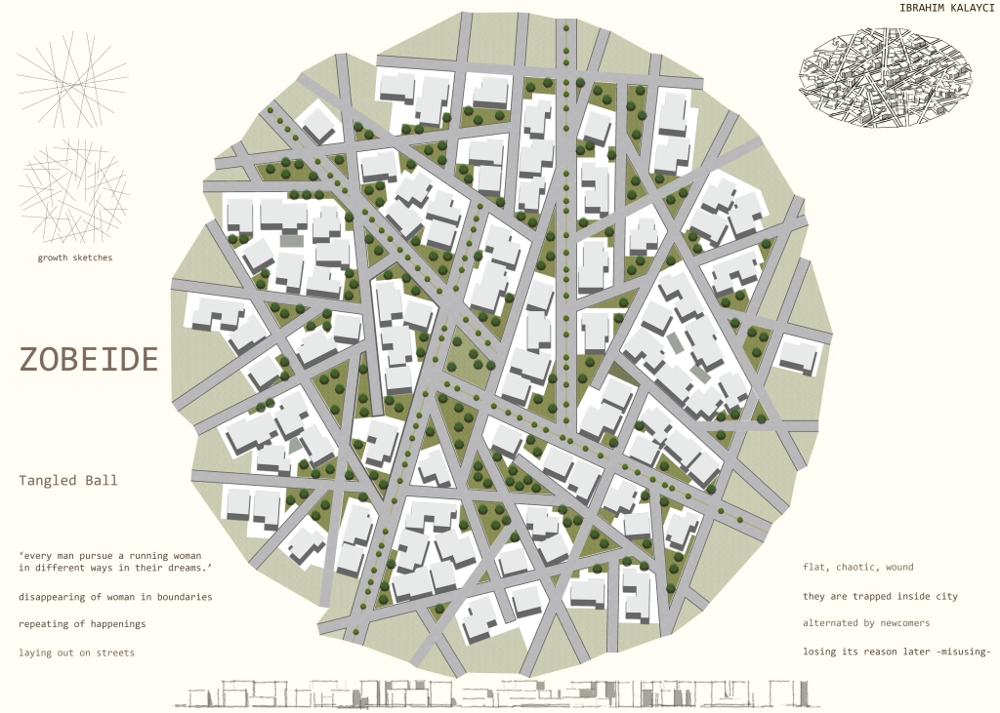
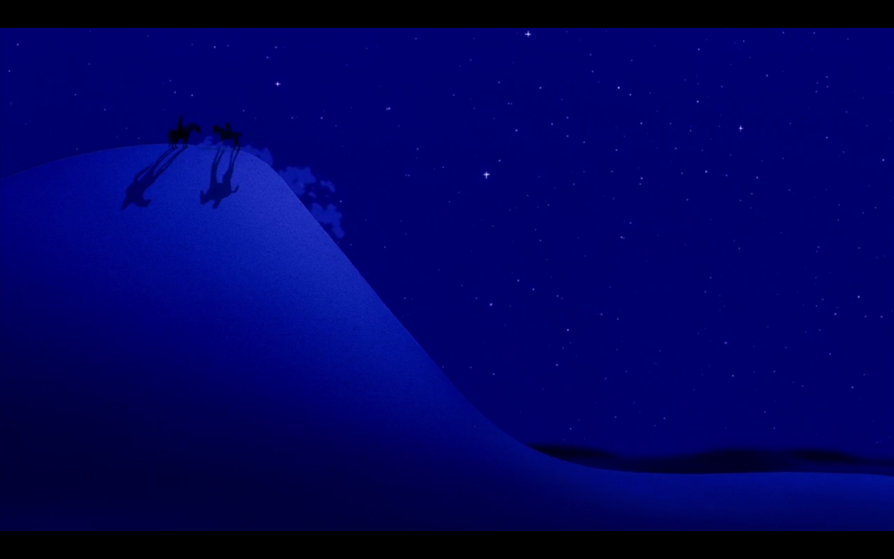
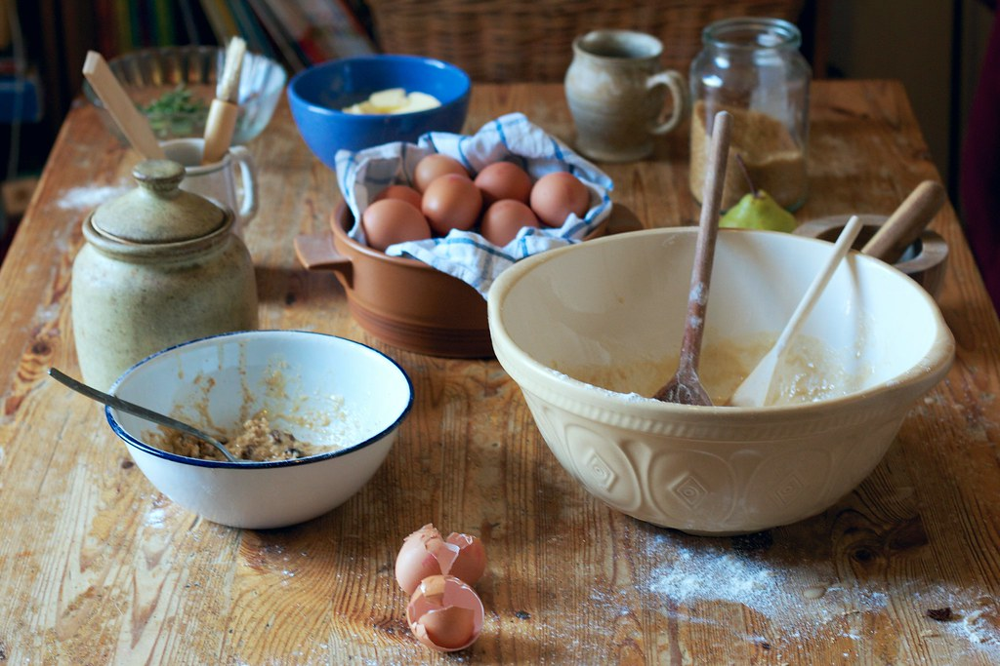
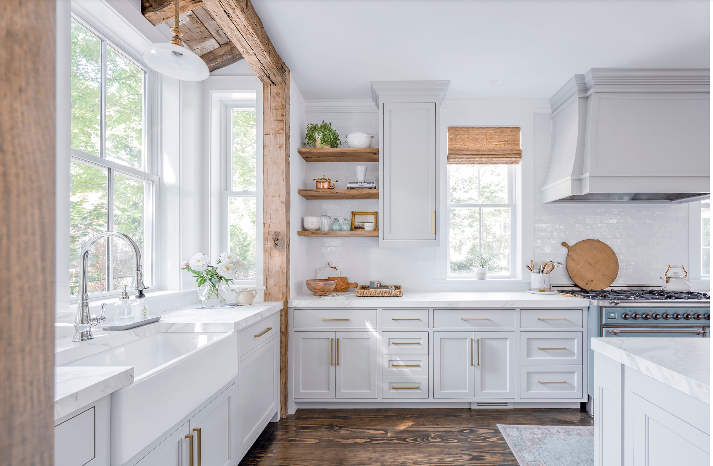
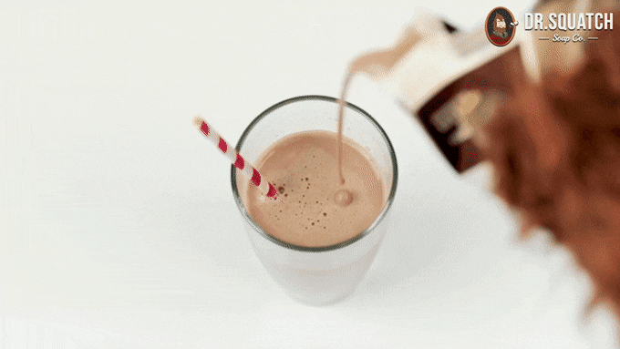

A dream:
We were on a weird quest w aladdin to save the kingdom, jasmine was there too.
Each thing needed to save the kingdom was obtained through pleasing certain figures. For some reason, aladdin instinctively knew the people whose requests he had to fulfill. In order to obtain people's compliance and please them, the group had to win them over by fulfilling a request of theirs.


Halfway through trying to win over the final villain, i get up from the couch. I am watching the events unfold onscreen with faith and some lady who i only know as some substitute teacher figure. She's gold rimmed oval glasses and red fluffy hair in a single braid over her shoulder, reminiscent of Elsa's hair. It is her house that we are in.
I go to the kitchen trying to make some sorta energy drink.
This kitchen is very brightly lit. The walls and countertops have a pleasing white aesthetic to them, offset by the dark black cabinetry and stainless steel appliances. There is a large central window, set in the middle of the kitchen wall, letting in ample light. You can glimpse the greenery outside through it. In the middle of the kitchen there is a behemoth of an island that spans the full width of the galley, and is rather girthy too. On top of the island is a multitude of things like... flour and eggs and half opened baking ingredients.


The drink I am trying to make has chocolate milk and stuff and the glass i put it in is entirely too small and is made out of a weird spongy material. It looks like a cookie shot glass. I drink from it and there's basically no liquid inside because the sponge sorta soaked it up, but surprisingly, it doesn't taste nasty from the sponge.
So instead i try to grab a larger glass like a more bowl-like wine glass to put the chocolate milk energy drink into.

Cut back to aladdin trying to fulfill this final request from the villain. The villain is asking aladdin to confess to them (the villain) that he genuinely loves them or something or other.
Aladdin isn't quite there yet emotionally, and instead he says "i've never really had anyone/thing to call my own before". He's out on the dunes im the deep blue-purple of the twilight, surrounded by the twinkling stars, dressed in his street rat clothes when he says this and suddenly i am reminded of abu and jasmine and i wonder if aladdin wholeheartedly thinks of them as people he can rely on or not.
Then i woke up